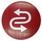

Note
こんにちは、SunFounderのRaspberry Pi & Arduino & ESP32愛好家コミュニティへようこそ！Facebook上でRaspberry Pi、Arduino、ESP32についてもっと深く掘り下げ、他の愛好家と交流しましょう。
参加する理由は？
エキスパートサポート：コミュニティやチームの助けを借りて、販売後の問題や技術的な課題を解決します。
学び＆共有：ヒントやチュートリアルを交換してスキルを向上させましょう。
独占的なプレビュー：新製品の発表や先行プレビューに早期アクセスしましょう。
特別割引：最新製品の独占割引をお楽しみください。
祭りのプロモーションとギフト：ギフトや祝日のプロモーションに参加しましょう。
👉 私たちと一緒に探索し、創造する準備はできていますか？[ここ]をクリックして今すぐ参加しましょう！
リモート制御
Zeus Carは、車を起動してからリモコンのボタンを直接押すことでリモコンで操作することができます。この方法は安定しており、外部の干渉を受けにくいですが、操作の柔軟性が低い場合があります。
クイックガイド
まず、以下のチュートリアルビデオをご覧ください。ビデオを視聴した後、以下の指示に従ってください。
Zeus Carの起動
初めて使用する場合やバッテリーケーブルが抜かれた場合、Zeus Car Shieldは過放電保護回路を作動させます。
そのため、Type-Cケーブルを約5秒間接続する必要があります。
電源インジケータが点灯すると、保護ステータスが解除されたことを意味します。この時点でバッテリーインジケータを確認して、両方のバッテリーインジケータがオフの場合、Type-Cケーブルを続けて接続してバッテリーを充電してください。

次に、車とESP32 CAMとの通信を確立するために、小さいスイッチを右に切り替えます。その後、リセットボタンを押してコードを再起動します。この時点で、車体下のライトがオレンジから淡い青に変わるのを観察できます。
リモートコントロールの異なるキーを押して、車を制御します。
Stop: 車のすべての動きを停止します。
コンパスのキャリブレーション：コンパスのキャリブレーションをオンにします。
ライン追跡：ライン追跡モードに切り替えます。
追跡モード：フォローモードに切り替えます。
障害物回避：障害物回避モードに切り替えます。
左/右にドリフト：左/右にドリフトします。
Set Heading: 車を手で一方向に置いた後、このキーをクリックして、この方向を車の前方として設定します。これにより、他のキーで車をその方向にゆっくりと回転させるのではなく、迅速に方向を指定できます。
左/右に回転（Cycle/USDキー）：左/右に旋回します。
全方向への移動(1 ~ 9)：車をすべての方向に移動させます。
Pause: 機能は停止とほぼ同じですが、車の頭が元の設定方向を向いていない場合、設定方向にゆっくり移動します。
{kind=link}
コンパスのキャリブレーション
{kind=link}
Zeus車を地上に置きます。コンパスのキャリブレーションをオンにすると、車は反時計回りに回転し始め、 約1分で停止します。 2分以上回転する場合、この場所の磁場は複雑です。場所を変更して、再度キャリブレーションを試みてください。
ライン追跡
 キーを押して、ライン追跡モードに切り替えます。
キーを押して、ライン追跡モードに切り替えます。
Zeus車には、ライン追跡の2つのモードがあります。 1つは頭が常に移動の方向を向いており、もう1つは頭が固定された方向を向いています。 ここでは、2つ目のモードが選択されています。
しかし、ラインを追跡させる前に、Omni Grayscaleモジュールをキャリブレートし、ラインを貼る必要があります。
3cm幅のラインを貼ります
Omni grayscaleモジュールには8つのセンサーがあり、各センサー間の距離は2〜3cmです。2つのセンサーで黒いラインを同時に検出する必要があります。したがって、貼り付けるラインは幅が少なくとも3cmで、曲がる角度は90°未満であってはいけません。

Omni Grayscaleモジュールをキャリブレートします。
各フロアには異なるグレースケール値があるため、工場で設定されたグレースケールのしきい値が現在の環境に適していない場合があります。そのため、使用する前にこのモジュールをキャリブレートする必要があります。床の色が大きく変わるたびにキャリブレートすることをおすすめします。
Zeus車を白い表面に置き、灰色のセンサーの光がちょうど点灯するまで、ポテンショメータを回します。

今度は、黒いラインと白い表面の間に2つのグレースケールセンサーを位置づけ、信号インジケータがちょうど消えるまでポテンショメータをゆっくり回します。

黒いラインと白い表面の間を何度も移動させて、グレースケールセンサーの光が黒いラインと白い表面の間では消え、白い表面上では点灯していることを確認し、モジュールが正常にキャリブレートされていることを確認できます。
Zeus車を貼り付けたライン上に置き、
キーを押すと、車はラインを追跡します。Omni grayscaleモジュールの高い環境要件のため、追跡効果が満足できない場合（オフトラック）は、数回追加でキャリブレートすることをおすすめします。
追跡モード
{kind=link}
超音波センサーは前方（20 cm）の障害物を検出し、それらを前方に追跡します。 これらの2つの障害物回避モジュールにより、車は左または右に追跡することができますが、 使用する前にキャリブレート（15cm）する必要があります。
IR障害物回避モジュールをキャリブレートします。
右の障害物回避モジュールの調整から始めます。輸送中の衝突により、赤外線モジュールの送信機と受信機が傾くことがあります。したがって、手動でそれらをまっすぐに調整する必要があります。
IR障害物回避モジュールから約15cm離れた場所に障害物を置きます。
このモジュールには2つのポテンショメータがあり、1つは送信電力を調整するためのものであり、もう1つは送信周波数を調整するためのものです。これらの2つのポテンショメータを調整することで、検出距離を調整することができます。
次に、ポテンショメータを調整します。15cmでモジュール上の信号ライトが点灯したら、調整が成功です。そうでない場合は、もう1つのポテンショメータを調整します。

同じ方法で、もう一つの障害物回避モジュールをキャリブレートします。
Zeus車をテーブルや地上に置き、手やその他の障害物を追跡させます。
障害物回避
障害物回避モードに切り替えたい場合は、  キーを押しますが、先に 追跡モード を参照して、2つの障害物回避モジュールをキャリブレートしてください。
キーを押しますが、先に 追跡モード を参照して、2つの障害物回避モジュールをキャリブレートしてください。
Zeus車は前方に進みます。
超音波モジュールが前方の障害物を検出すると、車は左に曲がります。
左の障害物回避モジュールが障害物を検出すると、車は右に曲がり、右の障害物回避モジュールが障害物を検出すると、車は左に曲がります。
左/右にドリフト
 キーと
キーと  キーを使用して、車を左/右にドリフトさせます。
キーを使用して、車を左/右にドリフトさせます。
- キーを押すと、車は左にドリフトします。
{kind=link}
- キーを押すと、車は右にドリフトします。

ドリフトする前に停止していた場合、
キーまたは キーを一度押すと、Zeusは左または右に90°ドリフトします。ドリフトする前に動いていた場合、キーを押すとZeus Carは左または右に90°ドリフトし、別のキーを押すまでパンします。
全方向への移動(1 ~ 9)
1~9の数字キーを使用して、Zeus Carを8方向に移動させます。

左/右に回転（Cycle/USDキー）
 を一度押すと、車体を中心に45°左に回転します。以前の状態に応じて、前進するか停止します。前の状態が停止の場合、45°左に曲がった後に停止します。前方の場合、左に曲がった後に前進します。
{kind=link}

同様に、
 を一度押すと、車は45°右に回転し、前の状態に応じて前進するか停止します。
を一度押すと、車は45°右に回転し、前の状態に応じて前進するか停止します。